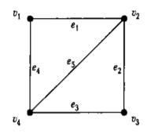

Обычно граф изображают диаграммой. Пример: На рисунке 1 изображена диаграмма:
На диаграмме вершины изображаются точками (или кружками), рёбра — линиями. На этом рисунке граф имеет четыре вершины и пять рёбер. В этом графе вершины v1 и v2, v2 и v3, v3 и v4, v4 и v1 смежны, а вершины v1 и v3 не смежны. Смежные рёбра: e1 и e2, e2 н e3, e3 и e4, e4 и e1, e1 и e5, e2 и e5, e3 и e5, e4 и e5. Несмежные рёбра: e1 и e3, e2 и e4.
Количество рёбер, инцидентных вершине v, называется степенью (или валентностью) вершины v и обозначается d(v):
∀v ∈ V (0 ≤ d(v)≤ р-1), d(v) = |Г+ (v)|
Таким образом, степень d(v)вершины v совпадает с количеством смежных с ней вершин. Количество вершин, не смежных с v, обозначают d^- (v). Ясно, что
∀v ∈ V (d(v)+ d- (v)=p-1)
Если степень вершины равна нулю (то есть d(v) = 0), то вершина называется изолированной. Если степень вершины равна единице (то есть d(v) = 1), то вершина называется концевой, или висячей.